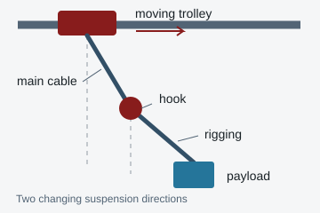
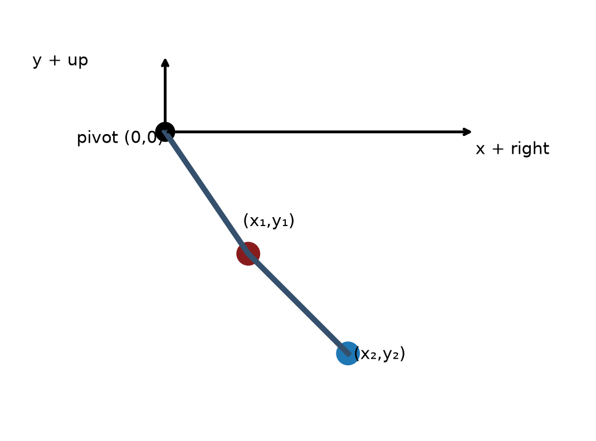

Two connected links can move together, oppose one another, or exchange motion. In Lab 3, you will measure both link angles and test how well a model predicts their motion.
Start here · Engineering applications
Why would an engineer study two pendulums?
When one moving part is attached to another, the motion of each affects the other. We call this coupled motion. A model of only one part can miss an important oscillation. This experiment gives you a simple, visible way to learn how to measure that motion and check a model before trusting its predictions.
A direct mechanical application
Cranes: a swinging hook and load

A crane can have a heavy hook on its main cable and a load hanging below the hook. Both can swing. Moving or stopping the trolley can excite both motions, so the load may still be moving after the trolley has stopped.
Why it matters: Engineers plan acceleration and braking to reduce residual sway, place the load accurately, and shorten settling time.
What this lab teaches: Track both bodies, identify the important oscillation frequencies, and check how mass and length affect the prediction. Our fixed pivot lets us study free motion; a working crane adds a moving trolley and control inputs.
A robot arm may have a shoulder joint, an elbow joint, and a tool or payload at its tip. Accelerating one link changes the motion and the forces experienced by the other. Treating the links as independent can give a poor prediction of the tool's path.
Why it matters: A coupled model helps engineers choose joint torques and move a tool accurately along a planned path.
What this lab teaches: Measure the masses and lengths, define each angle, and compare measured motion with a two-link model. Our links move freely under gravity; a robot adds motor torques, and some robots move in a horizontal plane.
Liquid fuel can move inside a tank when a spacecraft accelerates or rotates. This motion is called sloshing. It changes the vehicle's center of mass and applies forces and torques to the tank and spacecraft.
Why it matters: NASA has used a two-pendulum equivalent model for Europa Clipper propellant slosh to help predict loads and support attitude-control design.
What this lab teaches: A simple model can represent important frequencies and motion, but it must be checked against data. These fuel-model pendulums represent liquid modes; their arrangement and parameters differ from our two links in series.
Original teaching schematics, not to scale. The sources above describe the engineering applications; the connections to our experiment explain the skills you will practice.
The engineering question: How much motion can a simple model predict, and what changes when the release angle, measured mass, length, or initial condition changes? In this lab, you will test the prediction with real video data. You will not design a crane or robot controller.
Track the two bobs from your video
Use Run_Lab3_Ring_Video_Tracker.m with the original recording of the bright, ring-shaped bobs against a dark background. It extracts positions from the images. The separate analysis file then calculates angles, angular velocities and frequency spectra.
Requirements: MATLAB with Image Processing Toolbox. GNU Octave users need the image and video packages. Keep the extracted files in a writable folder.
Open the extracted folder in MATLAB. Set it as the Current Folder. Open Run_Lab3_Ring_Video_Tracker.m and click Run, or type Run_Lab3_Ring_Video_Tracker in the Command Window. Select your original MP4 when prompted. This workflow runs from the .m file; launching the separate Analyzer V4 app is not required.
Make five clicks in the displayed image. Follow each on-screen prompt: fixed pivot center; upper moving joint/bob center; lower moving bob center; inner edge of the upper bob's dark hole; inner edge of the lower bob's dark hole. The last two clicks measure the inner-hole radii, not the outside of the white rings.
Enter the recording and calibration settings. Enter the actual camera capture frame rate and the measured fixed-pivot-to-upper-joint distance in millimeters. The lab's nominal setting is 1000 capture frames/s; use your recorded setting if different. Do not substitute the slow-motion MP4 playback rate. Masses are not inputs to image tracking; they are used in the theoretical model.
Wait for the video to be processed. The output is saved beside the video in a folder ending _RingTracking. Open tracking_check.png to inspect the measured link lengths and angles. Check the tracked motion against the original film, especially at crossings or occlusions.
Analyze the saved positions. If capture rate and physical length were supplied, run Run_Lab3_ExpData_Analysis.m and select RingTracking_ExpData.mat from that output folder. Repeat the tracking and analysis for each trial. The analysis creates its own results folder containing figures and CSV tables.
If a setting or detection is missing: blank timing/calibration inputs produce pixel/frame-based outputs only. A physical ExpData file requires both settings. Missing or ambiguous detections remain blank, and abrupt position changes are flagged; do not turn them into measured zeros. Review the quality flags and recording before selecting the report interval.
The tracking check measures link lengths from the detected centers; it does not force constant lengths or fill gaps with a simulated trajectory. Use the measured masses, lengths and initial conditions separately in Run_Lab3_Simulation.m for your theoretical comparison.
Experimental-data analysis
Use MATLAB to analyze saved tracked positions. After extracting positions with the video tracker, or saving valid positions from Analyzer V4, open Run_Lab3_ExpData_Analysis.m in MATLAB and click Run. Select the saved ExpData MAT file.
Extract the MATLAB bundle and open Run_Lab3_ExpData_Analysis.m.
Click Run and select the saved ExpData MAT file. Repeat for each trial. Run the main file rather than its local helper functions.
Review the tracking geometry, angle histories, angular velocities and frequency spectra. PNG figures, editable FIG files, CSV tables and Lab3_Analysis.mat are saved in a *_Lab3_results folder beside the input file.
Interpret your measurements: principal orientation is expressed between −180° and 180°. The continuous-angle plot follows rotation within each connected data segment and can exceed this range during full turns. Check the original video when interpreting rotations.
The geometry diagnostic checks the tracked link lengths. Short-gap estimates are marked in the plots and data tables; longer gaps remain blank. Report your retained time interval, estimated or excluded points, and measurement limitations.
Compare the two spectra over their stated common time interval. Dominant FFT peaks during large-angle motion are not automatically the small-angle modal frequencies. Use your measured masses, lengths and release conditions when making a theoretical comparison.
Already recorded and tracked your trial? Use your saved MAT data here; no new recording is needed. The file to run is Run_Lab3_Compare_Theory.m. It overlays both measured link angles with the full nonlinear model and the small-angle analytical solution from Lecture 04. Both models include the uniform bar masses and use the same initial conditions and parameter values.
Extract the ZIP and set that folder as MATLAB’s Current Folder. Open Run_Lab3_Compare_Theory.m and click Run; do not run its helper files. Select your calibrated ExpData MAT or the Lab3_Analysis.mat saved by the analysis code. Raw ExpData is checked by the supplied analysis code first.
Enter your own group's measurements. The dialog asks for two center-to-center lengths in millimeters and four masses in grams: upper bar alone, lower bar alone, upper joint/bob and its hardware, and lower bob and its hardware. Do not include a bar again in a bob assembly. The code converts these values to SI units internally. No example masses are filled in for you.
Choose the free-motion interval. Use the measured-angle preview and original recording to select a start after the hand has released the apparatus and an end time in the original MAT time axis. The code estimates the initial angles and angular velocities from a short observed window at that start, then gives that same state to both models. You do not guess the starting angles or assume zero speed: a start during a swing is allowed.
Review the comparison figures. The output folder ending _TheoryComparison contains angle overlays, signed angular residuals, overlaid frequency spectra and a model-based energy check. Numeric CSV tables, a MAT result and READ_COMPARISON.txt record your parameters, actual interval, initial state, predicted modal frequencies and error metrics.
Which figures go in the report?
01_angles_theory_overlay.png: show the measured motion and both predictions for the two links. Blue dots are observations, red is nonlinear theory, and purple dashed is small-angle theory.
02_observed_only_residuals.png: quantify how disagreement develops with time. The text summary also reports angular RMSE.
03_spectra_theory_overlay.png: compare frequency content, quoting the measured peak, FFT bin spacing and predicted small-angle modal frequencies. A release need not visibly excite both modes.
04_energy_model_check.png: a model-based energy diagnostic, when relevant to your discussion; it is not a direct energy measurement.
Insert the PNG figures in your Word/PDF report; editable FIG files are also saved. Identify each trial, release condition, your measured masses and lengths, and the compared interval. Discuss early agreement and later phase or amplitude differences for small and large releases. Use READ_COMPARISON.txt for the numeric frequencies and errors, alongside the report requirements in the laboratory guide.
Understand the comparison: the two small-angle frequencies come from the mass and stiffness matrices at the downward equilibrium. They are different from the links' time-varying angular velocities. Large-angle FFT peaks are not automatically these two modal frequencies. For larger releases, compare early timing and motion as well as the longer record, and explain where the small-angle assumption loses accuracy.
The baseline nonlinear prediction has no friction or air drag. Its energy check tests numerical conservation; experiment-derived energy also depends on your entered masses and differentiated tracking data. The code does not tune masses, damping or phase to force agreement. Interpolated samples are excluded from error metrics and the shared observed FFT interval. A wholly missing joint must be retracked before a measured two-link comparison is possible.
Files for your laboratory section
Use the laboratory guide for the complete procedure and report requirements. The lecture explains the theory; the notebook lets you explore it before your section. Download the full MATLAB bundle so the scripts can find their helper functions.
Laboratory guide
Fall 2026 procedure, apparatus, camera settings, four trials, analyzer V4, MAT format, required figures and troubleshooting.
Video tracking, experimental-data analysis, simulation files, helper functions, model self-test, and MATLAB instructions. Keep the simulation files and their helper functions together.
Prior course apparatus photograph. Find the fixed pivot, upper joint/bob and lower bob before tracking.
The upper link joins the fixed pivot to the first moving joint. The lower link joins that joint to the lower bob. Two degrees of freedom means that two independent angles are needed to specify the configuration. Measure both bar masses, the bob and hardware masses, and the pivot-to-center lengths; the model includes the masses of both bars.
Example recording from the course
Example recording from the course folder; your experiment requires your own new videos and measured settings. For annotated small-motion mode demonstrations, see the lecture video section.
Plan four release cases
Record one small, nonzero aligned-link release and at least three larger-angle releases. Include two similar but distinct starts. Record the actual initial angles visible in your video rather than only the angles you intended to set. Document whether the links were released from rest or received an unintended push.
Case
What to look for
Why record it?
Small aligned-link release
Regular motion with contributions from one or both small-motion modes; aligned links do not necessarily give a pure mode.
Test the small-angle prediction and establish the measurement convention.
Larger-angle release
A changing motion pattern, possibly with strong interaction between the links.
Check where a linear prediction becomes less useful.
Another larger-angle release
A different combination of initial link angles.
Compare how the starting configuration changes the response.
A nearby, distinct start
Compare it with one of the other larger-angle cases using the measured starting angles.
Explore sensitivity while accounting for tracking error and an unintended release velocity.
Keep the original camera capture frame rate, calibration distance, measured masses and lengths with every trial. A large release angle does not automatically imply chaotic motion. A short pair of different traces alone does not prove chaos.
From camera frames to two angle histories
The camera records images. The analyzer tracks the two bob centers and converts their pixel positions into distances. The analysis script then calculates angles, angular velocities, and frequency spectra. Each stage needs a check before you trust the next one.
Record the complete motion. Set 1280 × 1024 and nominal 1000 capture frames/s, or document the actual camera setting. Keep the pivot and both bobs in view; check focus and contrast throughout the motion.
Save the raw H.264 MP4 and camera settings. The MP4 playback rate is not the capture rate. A slow-motion export does not change the physical interval between the original captured frames.
Track both centers. Follow the step-by-step video-tracking workflow with Run_Lab3_Ring_Video_Tracker.m. Inspect crossings and occlusions carefully. If you use Analyzer V4 instead, select Double Pendulum, enter capture fps, calibrate distances and check both moving centers before saving positions.
Save the MAT file. Its ExpData matrix contains time in seconds and four positions in millimeters, in the order shown below. The app reports right-positive horizontal positions and up-positive vertical positions relative to the fixed pivot.
Extract the experimental plots. Run the MATLAB analysis file and select the saved MAT file. Check both absolute angles, both angular velocities, and both spectra. The script reports tracked link lengths and the time spacing; use those to catch bad tracking or a wrong capture rate.
Compare with matching predictions. Use Run_Lab3_Compare_Theory.m with your group's measured masses and lengths. It overlays measured and predicted motion on the same selected time interval. Run_Lab3_Simulation.m is also available for a standalone prediction.
MAT column
Symbol
Physical meaning
Unit
1
t
Time assigned to the tracked frame
s
2, 3
x1, y1
Horizontal and vertical positions of the upper joint/bob relative to the fixed pivot
mm
4, 5
x2, y2
Horizontal and vertical positions of the lower bob relative to the fixed pivot
mm

Define the angles first:θ1 is the upper link's absolute angle from the downward vertical. θ2 is the lower link's absolute angle from the same vertical direction. Both are approximately zero when both links hang straight down. The lower link's direction is found from the displacement between the two moving centers:
θ1 = unwrap(atan2(x1, −y1))
θ2 = unwrap(atan2(x2 − x1, −(y2 − y1)))
atan2 finds the angle using both displacement components and their signs. unwrap removes artificial jumps of a full revolution so continuous rotations remain continuous. Its outputs here are radians; the script labels angle plots in degrees. θ2 is an absolute angle; the relative angle at the moving joint would be θ2 − θ1. Check a known frame before processing every trial.
Run the scripts, not the helper functions. First run Test_Lab3_Model.m, then Run_Lab3_Simulation.m with your measured parameters, and Run_Lab3_ExpData_Analysis.m on each saved MAT file. Do not click Run inside MIE402_Lab3_RHS.m or MIE402_Lab3_Energy.m; they need input arguments. Lab 3 does not use sineFit.m: two coupled links generally do not produce a single sine wave.
What do your plots tell an engineer?
Evidence in your data
Physical interpretation
Connection to the applications
Two angle histories
Look at how the upper and lower links move relative to one another. A changing amplitude pattern can result from a combination of modes.
A crane needs both hook and load motion; a robot needs both joint motions.
Small-motion spectra and angle patterns
A normal mode is a coordinated oscillation pattern with a single frequency and a fixed ratio of link amplitudes. A mixed release can show both frequencies. One mode can be weak or unresolved; two visible peaks are not guaranteed in every trace.
Knowing the important frequencies helps engineers avoid exciting unwanted motion. Peak locations alone do not identify a mode: also check the two-angle pattern and the model prediction.
Larger-angle motion
The full nonlinear prediction accounts for changing geometry. Small-angle natural frequencies are useful reference values, but a large-motion spectrum need not contain only those two peaks.
Model validity depends on the operating conditions. A model validated for small motion may give a poor prediction for a much larger disturbance.
Measured amplitude decay and model mismatch
The baseline model omits pivot friction and air drag. Tracking error, imperfect initial conditions and mass/length errors can also explain disagreement. Do not attribute every difference to drag.
Engineers distinguish missing physics from bad inputs and measurement errors before changing a design or controller.
Energy explains why the two links cannot be treated independently
As the bobs fall, gravitational potential energy becomes kinetic energy. As they rise, that exchange reverses. The lower bob's velocity depends on the motion of both links, so its kinetic energy couples the two angles. One link can become quieter while the other becomes more active even in an ideal model with no energy loss.
Total mechanical energy should remain nearly constant in the undamped simulation. The simulation's energy check helps detect a numerical problem; it does not prove that the model describes the real apparatus. In the real experiment, friction and drag can remove energy and reduce amplitudes.
For frequency analysis, label peaks in Hz and state the record duration. A longer useful record gives closer frequency-bin spacing. The FFT summarizes frequency content over the chosen interval; it does not replace the time histories or prove chaos.
Check one complete trial before leaving
Both bobs remain correctly identified; tracked link lengths stay close to the measured lengths.
The angle signs match a known frame and no unexplained tracking jumps remain.
The MAT time spacing agrees with the actual capture rate and any documented frame skipping.
You can open the raw video, MAT file, angle plots, angular-velocity plots and spectra.
Your notes include masses, lengths, camera settings, calibration and actual starting conditions.
Show one full trial set to your GTA before leaving. If a plot looks wrong, inspect the tracking and inputs while the apparatus is still available.
Combined Labs 2–3 report: tentatively due November 2; check Canvas. Follow the laboratory guide and report guide for the assigned deliverables.